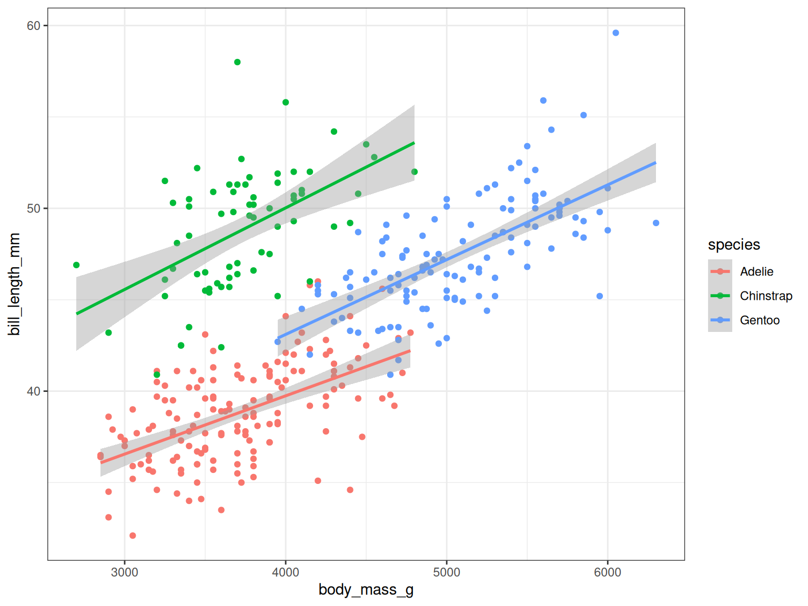
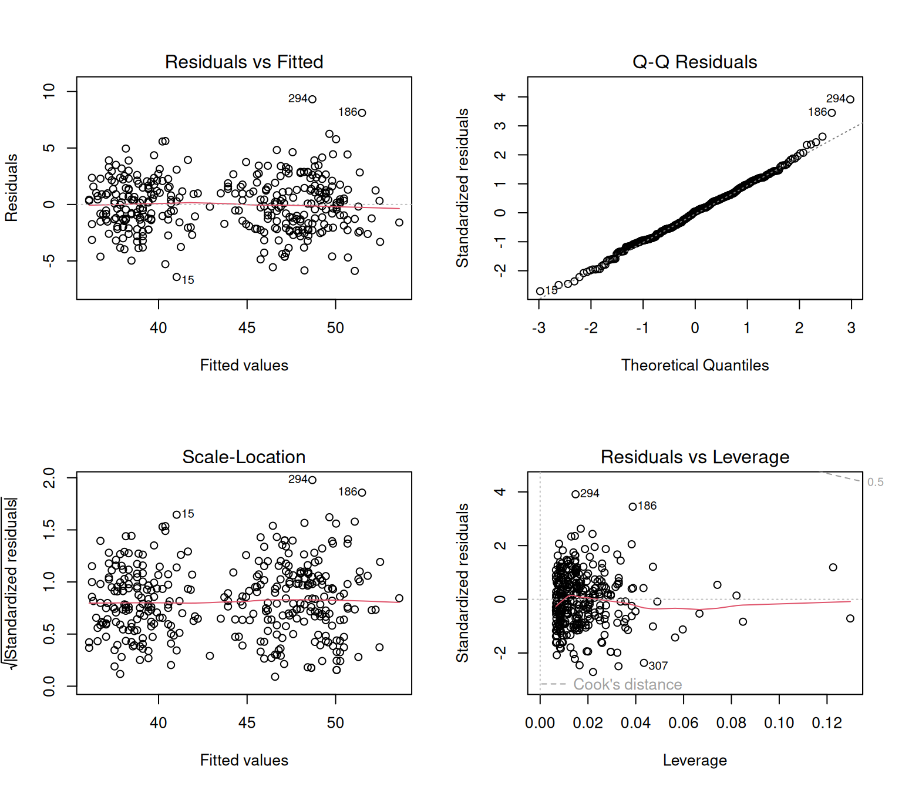
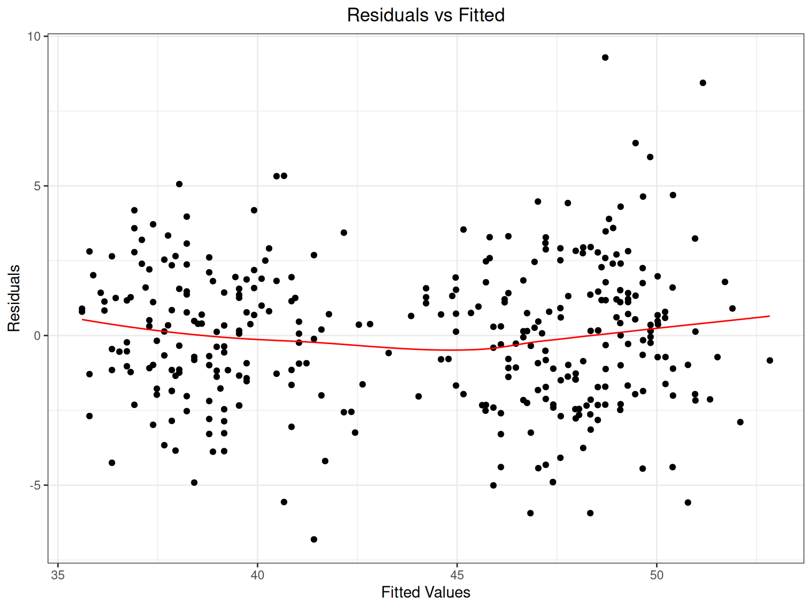
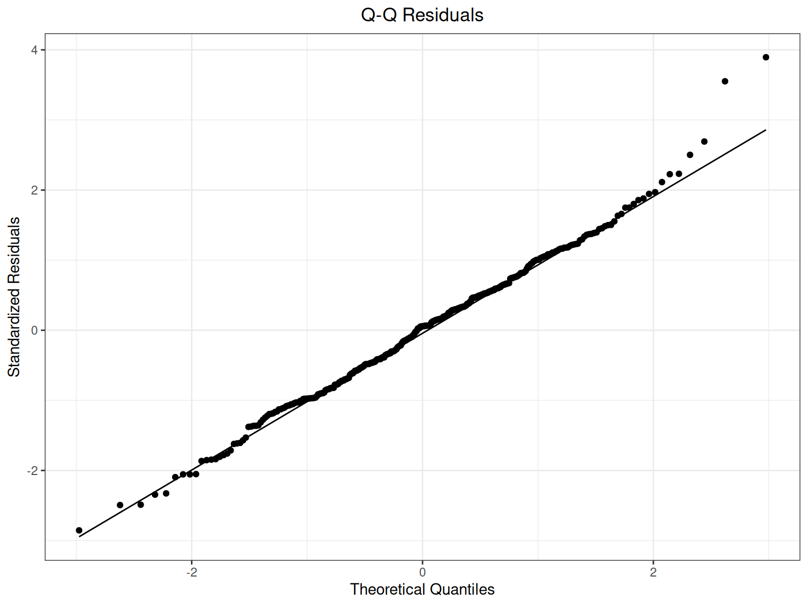

library(tidyverse)
library(palmerpenguins)
theme_set(
theme_bw() + theme(plot.title = element_text(hjust = 0.5))
)Linear Regression in R
RAdelaide 2025
Linear Regression
Setup
- Start clear R session
- Create a blank R script:
LinearRegression.R - Load the key packages
Linear Regression
We are trying to estimate a line with slope & intercept
\[ y = ax + b \]
Or
\[ y = \beta_0 + \beta_1 x \]
- \(y\) is the response variable
- \(x\) is the predictor variable
- Makes the most intuitive sense when both \(x\) & \(y\) are continuous
Linear Regression
## Does bill length depend on body mass?
## Plot the predictor (body mass) on `x`
## The response (bill_length) goes on `y`
penguins |>
ggplot(
aes(body_mass_g, bill_length_mm)
) +
geom_point() +
geom_smooth(method = "lm")
- There looks like a fairly clear linear relationship
Coefficients
How do we interpret the Intercept?
This is what the bill length would be if a penguin weighed exactly 0
- We’d probably expect this to be zero but they almost never are
- The Intercept is almost always significant
- What does this really tell us about the relationship between bill length and weight?
- Generally focussed on the relationship within the range of observed predictors
- No guaranteed linear relationship outside of this range
Residuals
- Points never lie exactly on the regression line \(\implies\) Why?
- We’re actually fitting the model
\[ y_i = \beta_0 + \beta_1 x_i + \epsilon_i \]
- \(\beta_0 + \beta_1 x_i\) is the exact line co-ordinate (Intercept + slope*predictor)
- \(\epsilon_i\) is the the vertical difference between the observed value and the fitted value
- Known as a residual
- Defined as \(\epsilon_i \sim \mathcal{N}(0, \sigma)\)
- Residual means the bit left over when we subtract the predicted value from the observed
Assumptions Of Linear Regression
Linear Regression formally has 4 key assumptions
- Linear relationship between predictor and response
- Mean of residuals is zero across the entire range
- Constant variance across the range of data (homoscedasticity)
- Residuals are normally distributed
- Independence of errors
- Three of these are represented in the definition \(\epsilon_i \sim \mathcal{N}(0, \sigma)\)
Model Checking
- To check our fitted model, we should check the residuals to ensure \(\epsilon_i \sim \mathcal{N}(0, \sigma)\)
## Check the residuals. It will ask you the following
## Hit <Return> to see next plot:
## So follow the instructions and check each plot before proceeding
## There are 4 plots by default
plot(bill_length_lm)Model Checking

- Check the zero mean of \(\mathcal{N}(0, \sigma)\)
- Is this assumption satisfied across the range of the data?
Objects Of Class lm
- The linear model we fitted produced an object of class
lm
class(bill_length_lm)[1] "lm"- This is also a list
## Inspect the actual object
glimpse(bill_length_lm)Adding Terms
## Does bill length depend on body mass?
## Plot the predictor (body mass) on `x`
## The response (bill_length) goes on `y`
## Does each species need it's own model
penguins |>
ggplot(
aes(
body_mass_g, bill_length_mm,
colour = species
)
) +
geom_point() +
geom_smooth(method = "lm")
- Do we think these slopes are the same?
- Do we think the intercepts are the same?
Model Diagnostics
## Check the histogram of residuals
hist(bill_length_sp_lm$residuals, breaks = 20)## Perform the Shapiro-Wilk test for Normality
shapiro.test(bill_length_sp_lm$residuals)
Shapiro-Wilk normality test
data: bill_length_sp_lm$residuals
W = 0.99317, p-value = 0.123Interpreting the Coefficients
- Now we’re happier with the model \(\rightarrow\) what do the coefficients mean?
Estimate Std. Error t value Pr(>|t|)
(Intercept) 24.919470977 1.0630034684 23.442511 7.632983e-73
speciesChinstrap 9.920884113 0.3510790185 28.258265 5.093822e-91
speciesGentoo 3.557977539 0.4857896978 7.324111 1.776921e-12
body_mass_g 0.003748497 0.0002823439 13.276352 1.158990e-32- By default, the primary Intercept is the first factor level in
species
levels(penguins$species)[1] "Adelie" "Chinstrap" "Gentoo" Model Diagnostics
## Check the residuals after
## including a separate intercept
## and slope for species
par(mfrow = c(2, 2))
plot(bill_length_int_lm)
par(mfrow = c(1, 1))
Model Selection
- How do we decide on the best model?
- A common technique is Analysis of Variance (ANOVA)
- Classic ANOVA checks importance of each term within a model
## Run a separate ANOVA on each model
anova(bill_length_lm)Analysis of Variance Table
Response: bill_length_mm
Df Sum Sq Mean Sq F value Pr(>F)
body_mass_g 1 3599.7 3599.7 186.44 < 2.2e-16 ***
Residuals 340 6564.5 19.3
---
Signif. codes: 0 '***' 0.001 '**' 0.01 '*' 0.05 '.' 0.1 ' ' 1anova(bill_length_sp_lm)Analysis of Variance Table
Response: bill_length_mm
Df Sum Sq Mean Sq F value Pr(>F)
species 2 7194.3 3597.2 622.88 < 2.2e-16 ***
body_mass_g 1 1017.9 1017.9 176.26 < 2.2e-16 ***
Residuals 338 1952.0 5.8
---
Signif. codes: 0 '***' 0.001 '**' 0.01 '*' 0.05 '.' 0.1 ' ' 1anova(bill_length_int_lm)Analysis of Variance Table
Response: bill_length_mm
Df Sum Sq Mean Sq F value Pr(>F)
species 2 7194.3 3597.2 625.1488 <2e-16 ***
body_mass_g 1 1017.9 1017.9 176.9039 <2e-16 ***
species:body_mass_g 2 18.6 9.3 1.6159 0.2003
Residuals 336 1933.4 5.8
---
Signif. codes: 0 '***' 0.001 '**' 0.01 '*' 0.05 '.' 0.1 ' ' 1- Does this give any clue as to the best model?
Speeding The Process Up
- This was a careful breakdown of finding the best model
- We can partially automate this and use some shortcuts
- The shorthand for an interaction term with separate intercepts is
*
## Refit the model with an interaction term using the shorthand code
bill_length_int_lm <- lm(
bill_length_mm ~ species * body_mass_g, data = penguins
)
summary(bill_length_int_lm)
Call:
lm(formula = bill_length_mm ~ species * body_mass_g, data = penguins)
Residuals:
Min 1Q Median 3Q Max
-6.4208 -1.6461 0.0919 1.4718 9.3138
Coefficients:
Estimate Std. Error t value Pr(>|t|)
(Intercept) 26.9941391 1.5926015 16.950 < 2e-16 ***
speciesChinstrap 5.1800537 3.2746719 1.582 0.115
speciesGentoo -0.2545907 2.7138655 -0.094 0.925
body_mass_g 0.0031879 0.0004271 7.464 7.27e-13 ***
speciesChinstrap:body_mass_g 0.0012748 0.0008740 1.459 0.146
speciesGentoo:body_mass_g 0.0009030 0.0006066 1.489 0.138
---
Signif. codes: 0 '***' 0.001 '**' 0.01 '*' 0.05 '.' 0.1 ' ' 1
Residual standard error: 2.399 on 336 degrees of freedom
(2 observations deleted due to missingness)
Multiple R-squared: 0.8098, Adjusted R-squared: 0.807
F-statistic: 286.1 on 5 and 336 DF, p-value: < 2.2e-16- Alternatively, all terms can be placed inside brackets & raised to a power
(species + body_mass_g)^2would give two-way interactions
Objects of Class summary.lm
- The coefficients element of the basic
lmobject only had the fitted values- Not the std errors, t-tests or p-values
## Extract the coefficients directly from the linear model
bill_length_sp_lm$coefficients (Intercept) speciesChinstrap speciesGentoo body_mass_g
24.919470977 9.920884113 3.557977539 0.003748497 - These values are produced by the function
summary()
## Extract the coefficients from the summary object
summary(bill_length_sp_lm)$coefficients Estimate Std. Error t value Pr(>|t|)
(Intercept) 24.919470977 1.0630034684 23.442511 7.632983e-73
speciesChinstrap 9.920884113 0.3510790185 28.258265 5.093822e-91
speciesGentoo 3.557977539 0.4857896978 7.324111 1.776921e-12
body_mass_g 0.003748497 0.0002823439 13.276352 1.158990e-32Using A More Tidyverse Friendly Approach
- The function
tidy()from the packagebroomis a catch-all function- Will return a tibble
- Returns the same from
lmandsummary.lmobjects
bill_length_sp_lm |> broom::tidy()# A tibble: 4 × 5
term estimate std.error statistic p.value
<chr> <dbl> <dbl> <dbl> <dbl>
1 (Intercept) 24.9 1.06 23.4 7.63e-73
2 speciesChinstrap 9.92 0.351 28.3 5.09e-91
3 speciesGentoo 3.56 0.486 7.32 1.78e-12
4 body_mass_g 0.00375 0.000282 13.3 1.16e-32Adding Significance Stars
- The easiest way for me as a
case_when()
bill_length_sp_lm |>
broom::tidy() |>
mutate(
stars = case_when(
p.value < 0.001 ~ "***",
p.value < 0.01 ~ "**",
p.value < 0.05 ~ "*",
p.value < 0.1 ~ ".",
TRUE ~ ""
)
)# A tibble: 4 × 6
term estimate std.error statistic p.value stars
<chr> <dbl> <dbl> <dbl> <dbl> <chr>
1 (Intercept) 24.9 1.06 23.4 7.63e-73 ***
2 speciesChinstrap 9.92 0.351 28.3 5.09e-91 ***
3 speciesGentoo 3.56 0.486 7.32 1.78e-12 ***
4 body_mass_g 0.00375 0.000282 13.3 1.16e-32 *** Or Fitting a Model On The Fly
- Obviously no room for checking model diagnostics
penguins |>
## Piped data can be recalled using `_`
lm( bill_length_mm ~ species * body_mass_g, data = _) |>
step() |> # Fit the best model using the AIC
broom::tidy() |> # Turn the output into a tibble & add stars
mutate(
stars = case_when(
p.value < 0.001 ~ "***",
p.value < 0.01 ~ "**",
p.value < 0.05 ~ "*",
p.value < 0.1 ~ ".",
TRUE ~ ""
)
)Start: AIC=604.42
bill_length_mm ~ species * body_mass_g
Df Sum of Sq RSS AIC
- species:body_mass_g 2 18.596 1952.0 603.69
<none> 1933.4 604.42
Step: AIC=603.69
bill_length_mm ~ species + body_mass_g
Df Sum of Sq RSS AIC
<none> 1952.0 603.69
- body_mass_g 1 1017.9 2969.9 745.22
- species 2 4612.5 6564.5 1014.48# A tibble: 4 × 6
term estimate std.error statistic p.value stars
<chr> <dbl> <dbl> <dbl> <dbl> <chr>
1 (Intercept) 24.9 1.06 23.4 7.63e-73 ***
2 speciesChinstrap 9.92 0.351 28.3 5.09e-91 ***
3 speciesGentoo 3.56 0.486 7.32 1.78e-12 ***
4 body_mass_g 0.00375 0.000282 13.3 1.16e-32 *** S3 Method Dispatch
S3 Method Dispatch
- Objects with class
lmandsummary.lmareS3objects - Very informal class structure in
R - Easy to work with \(\implies\) easy to break
- When we printed these objects \(\implies\)
print.lm()orprint.summary.lm() - Likewise when we plotted the
lmobject \(\implies\)plot.lm()
?plot.lmConfidence Intervals
- For confidence or prediction intervals, we can use
predict.lm()
What’s the difference between a confidence and prediction interval
- 95% Confidence Intervals: The mean will be in the given interval 95% of the time
- 95% Prediction Intervals: An observation will be in the given interval 95% of the time
- We will need a new data frame to make the predictions about
Closing Comments
Additional Plotting Comments
- I rarely show diagnostic plots:
- For me when fitting data & performing analysis
- No need for ggplot versions
tibble(
fitted= fitted(bill_length_sp_lm),
residuals = resid(bill_length_sp_lm)
) |>
ggplot(aes(fitted, residuals)) +
geom_point() +
geom_smooth(
se = FALSE, colour = 'red',
linewidth = 0.5
) +
ggtitle("Residuals vs Fitted") +
labs(
x = "Fitted Values", y = "Residuals"
) 
tibble(
residuals = rstandard(bill_length_sp_lm)
) |>
ggplot(aes(sample = residuals)) +
geom_qq() +
geom_qq_line() +
ggtitle("Q-Q Residuals") +
labs(
x = "Theoretical Quantiles",
y = "Standardized Residuals"
) 
Additional Plotting Packages
- Multiple options for great looking plots
ggpmiscfor adding correlations, regression equations etcggstatsfor multiple fresh perspectives on coefficientsggstatsplotalso a wide range of plotting capabilities
Challenges
- How could we account for
sexin the existingpenguinsmodel? - Load the
pigsdataset - Make a boxplot:
lenwill be the predictor (\(y\))- Place
doseon the \(x\)-axis usingsuppto fill the boxes
- Find the best model for
len, usingsuppanddoseas the predictors - Check the residuals and diagnostic plots
- Make sure you can interpret the model coefficients
- What is the 99% confidence interval for
supp = "VC"&dose = "High"- What does this mean?
Footnotes
https://bioconductor.org/packages/release/workflows/vignettes/RNAseq123/inst/doc/designmatrices.html↩︎